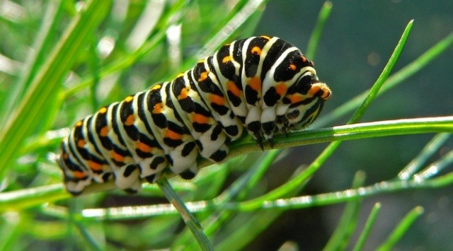
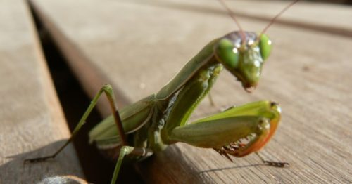
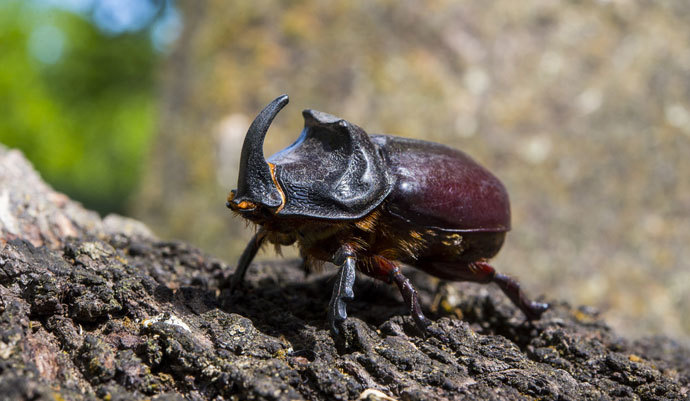

Estos insectos se pueden alimentar de diferentes partes de las plantas ya sea de los tallos, hojas, frutos, flores, raíces, granos o savia.
Los insectos herbívoros son los insectos más numerosos entre estas especies. Se alimentan tanto en el interior de las plantas como en la superficie.
Algunas especies de herbívoros como las orugas o los grillos tienen aparato bucal de tipo masticador lo que le permite devorar las hojas como también más otras partes en los vegetales. Los daños de estos insectos son muy vistoso y muy aparente.
Los insectos herbívoros chupador como las cochinillas o pulgones, suelen succionar las savias de las plantas entre otros jugos.

Carnívoros
Como ya habíamos mencionado existen insectos que pueden alimentarse de otros insectos o los parasitan. Existe insectos paracitos como lo son los dípteros (moscas) e himenópteros (avispas) como las especies parasitas.
Los insectos paracitos y los depredadores pueden alimentarse de los huevos de las larvas o de los otros insectos adultos.
Para perforar el interior de los insectos que los himenópteros van a parasitar poseen un ovopositor que le permite perforarlo.

Basureros
Los insectos saprófagos o detritívos se alimentan de animales en descomposición o de materiales vegetales, como excrementos, hojarasca,frutos caídos, troncos caídos. Cuando los insectos se nutren de cadáveres se le llaman insectos carroñeros o necrñofagos. Cuando se alimentan de excrementos coprófagos. Y los saprófagos que son alimentados de las raíces en descomposición se le llama xilofágos como lo son la termita o el escarabajo rinoceronte

Hematófagos
Son los insectos que generalmente se alimentan de la sangre.
Así que si no sabias que comen los insectos, ya tienes la información que necesitabas saber sobre la alimentación de los insectos.